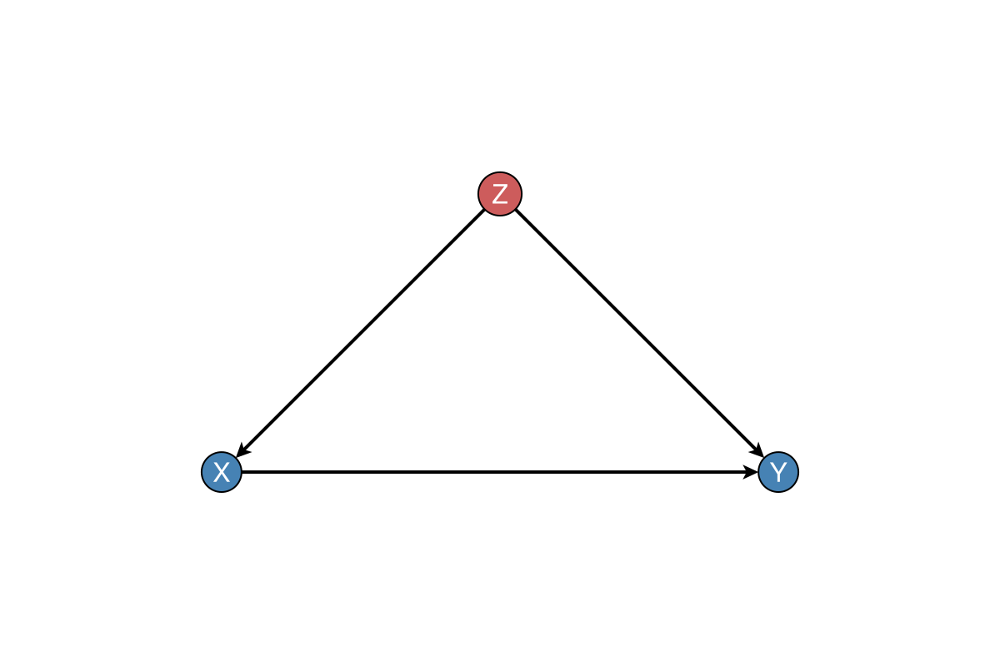
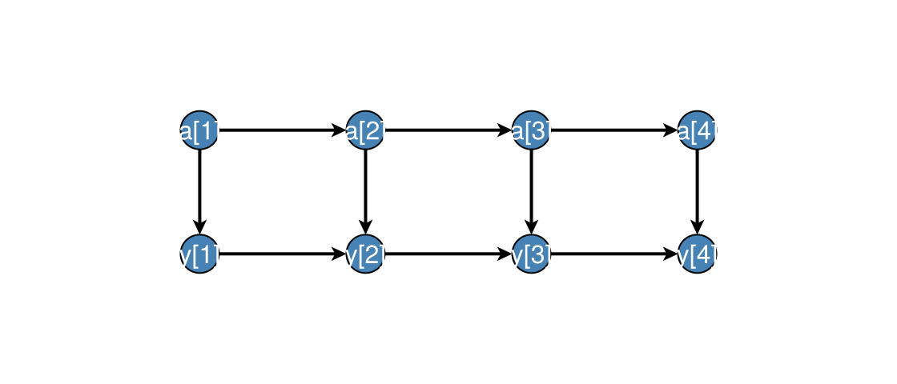

Utilities
Optional plotting requires DAGMakie.jl (using DAGMakie). See the DAGMakie docs for layout, themes, and path-highlighting conventions.
CausalDynamics.has_dagmakie — Function
has_dagmakie() -> BoolReturn true when the CausalDynamicsDAGMakieExt extension is loaded (using DAGMakie).
CausalDynamics.plot_causal_graph — Function
plot_causal_graph(g; node_labels, highlight_nodes, highlight_edges, kwargs...)Plot a causal graph with optional node labels and highlighting.
Requires using DAGMakie. Returns a Makie Figure (via DAGMakie).
Arguments
g::AbstractGraph: The causal graph to plotnode_labels: Optional labels for nodes (default: node indices)highlight_nodes::Set{Int}: Nodes to highlighthighlight_edges: Edges to highlight as(src, dst)tupleskwargs...: Forwarded to DAGMakie plotting helpers
Example
using CausalDynamics, Graphs, DAGMakie, CairoMakie
g = DiGraph(3)
add_edge!(g, 1, 2)
add_edge!(g, 1, 3)
add_edge!(g, 2, 3)
fig = plot_causal_graph(g;
node_labels = ["Z", "X", "Y"],
highlight_nodes = Set([1]),
)CausalDynamics.plot_with_adjustment_set — Function
plot_with_adjustment_set(g, X, Y, Z; node_labels, kwargs...)Plot a causal graph highlighting treatment X, outcome Y, and adjustment set Z.
Requires using DAGMakie.
CausalDynamics.plot_backdoor_paths — Function
plot_backdoor_paths(g, X, Y; node_labels, kwargs...)Plot a causal graph highlighting backdoor paths from treatment X to outcome Y.
Requires using DAGMakie. Uses DAGMakie's dagplot_backdoor with the CausalDynamics find_backdoor_paths / adjustment helpers where useful.
CausalDynamics.plot_identification_result — Function
plot_identification_result(g, result; node_names=nothing, kwargs...) -> FigurePlot highlighting nodes from an IdentificationResult. Requires using DAGMakie.
CausalDynamics.dagplot_temporal — Function
dagplot_temporal(unrolling; kwargs...) -> Figure, Axis, plotPlot a TemporalUnrolling with DAGMakie time-indexed layout and var[t] labels. Requires using DAGMakie.
Live example
using CausalDynamics, Graphs, DAGMakie, CairoMakie
g = DiGraph(3)
add_edge!(g, 1, 2)
add_edge!(g, 1, 3)
add_edge!(g, 2, 3)
fig = plot_causal_graph(g;
node_labels = ["Z", "X", "Y"],
highlight_nodes = Set([1]),
)
fig
Temporal unrolling
using CausalDynamics, DAGMakie, CairoMakie
spec = TemporalDAGSpec([:a, :y], [(:a, :y, 0), (:a, :a, 1), (:y, :y, 1)])
u = unroll_temporal_dag(spec, 4)
fig, ax, p = dagplot_temporal(u; figure_size = (560, 240))
fig
For raw Graphs without a TemporalUnrolling, use DAGMakie.dagplot_time_indexed (see the DAGMakie skeletons & time guide).